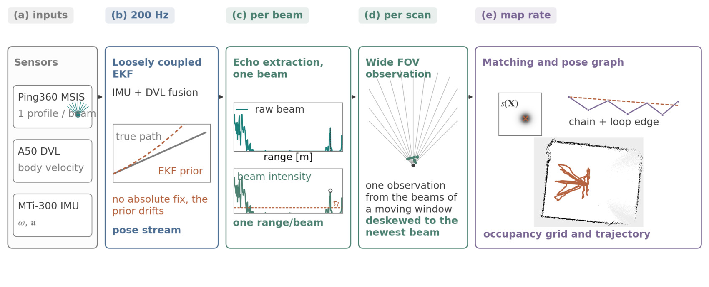
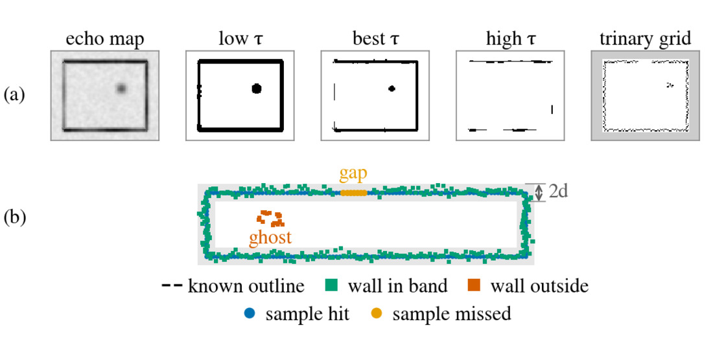
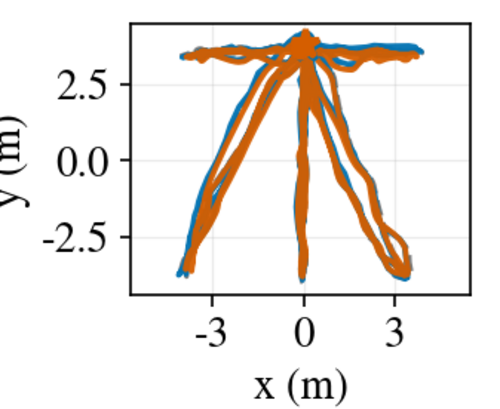
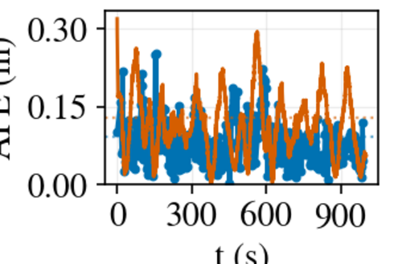
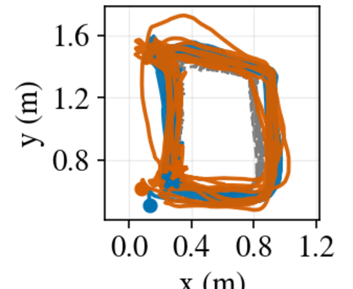
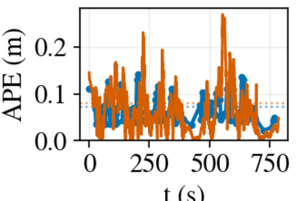
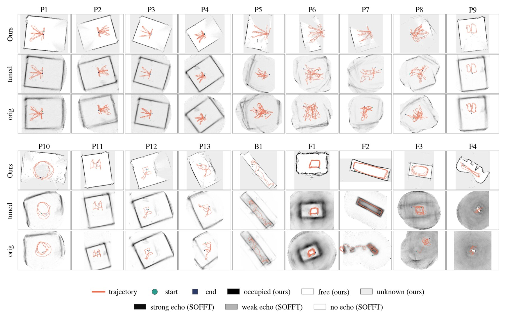
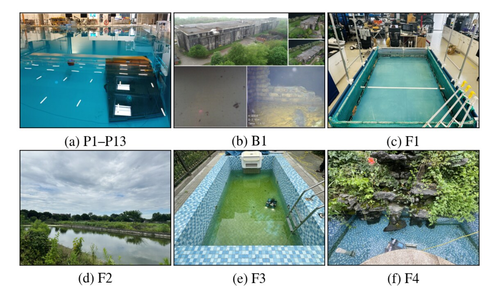
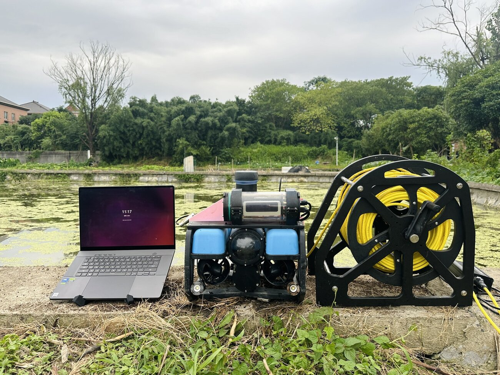

Manuscript under review
Affiliation to be announced
Supplementary video. Four recordings run side by side, each mapped online during a 1× real-time replay of the recorded data. The screen captures are accelerated and every panel shows its own playback factor and elapsed real time. Download MP4, 1080p, 1:28, no audio.
Underwater inspection needs localization and mapping that survive turbidity, darkness and reverberation.
A mechanical scanning imaging sonar sees through water that blinds cameras, at a fraction of the cost, size and power of a multibeam sonar. It also acquires one beam at a time, so a full revolution takes tens of seconds and the returns arrive asynchronously while the vehicle moves. We present a real-time underwater SLAM system built around that constraint rather than against it.
Our front end extracts at most one range point per beam. Odometry from a Doppler velocity log and an inertial measurement unit supports beam-wise motion compensation, and an angular sliding window accumulates the compensated points into pseudo laser scans with a wide field of view. Spatial filtering removes isolated sonar points. Correlative scan matching and loop detection then establish constraints under acceptance rules adapted to acoustic match responses, and sparse pose-graph optimization corrects the trajectory.
We evaluate on eighteen recordings across six scenes, fourteen of which carry a reference trajectory.
From asynchronous beams to an optimized pose graph.

Two baselines: the released open-source implementation, and the same code after our own parameter search.
| Recording | Ours | SOFFT re-tuned | SOFFT released |
|---|---|---|---|
| Public benchmark, motion-capture reference | |||
| P1 | 0.175 | 0.160 | 0.438 |
| P2 | 0.389 | 0.150 | 0.708 |
| P3 | 0.091 | 0.129 | 0.296 |
| P4 | 0.151 | 0.124 | 0.410 |
| P5 | 0.470 | 1.977 | 2.710 |
| P6 | 0.454 | 3.522 | 2.560 |
| P7 | 1.033 | 3.625 | 2.094 |
| P8 | 1.036 | 3.836 | 3.292 |
| P9 | 0.099 | 0.081 | 0.451 |
| P10 | 0.410 | 1.044 | 1.246 |
| P11 | 0.116 | 0.118 | 0.316 |
| P12 | 0.071 | 0.074 | 0.210 |
| P13 | 0.307 | 0.817 | 3.247 |
| Field water, TagSLAM reference | |||
| F1 | 0.072 | 0.079 | 0.125 |
A map is scored against the known boundary of the scene. Completeness is the share of the true boundary that the map recovers, precision the share of mapped wall cells that fall on it. Echo-intensity maps are cut at the threshold that favours them most, so the comparison does not hinge on a choice we made for the baseline.
| Recording | Ours compl. | Ours prec. | Tuned compl. | Tuned prec. | Released compl. | Released prec. |
|---|---|---|---|---|---|---|
| P1 | 80 | 75 | 72 | 70 | 61 | 64 |
| P2 | 79 | 81 | 79 | 66 | 90 | 30 |
| P3 | 85 | 80 | 76 | 77 | 70 | 70 |
| P4 | 74 | 86 | 75 | 69 | 77 | 63 |
| P9 | 85 | 86 | 73 | 84 | 65 | 48 |
| P10 | 51 | 55 | 43 | 14 | 29 | 16 |
| P11 | 92 | 75 | 73 | 74 | 71 | 66 |
| P12 | 68 | 83 | 66 | 77 | 69 | 66 |
| F1 | 97 | 79 | 81 | 66 | 82 | 70 |
| Mean | 79 | 78 | 71 | 66 | 68 | 55 |
| Maps built, of 18 | 17 | 11 | 10 | |||





P3 in the test basin and F1 in the laboratory pool, each against its reference trajectory, with the error evolving over the recording.
Processing load is the share of the recording duration spent computing. Our system stays between 0.1% and 0.4% across all eighteen recordings. The re-tuned baseline ranges from 8% on the bunker to 48% on the fastest basin recording. Both keep up with a 1× replay, but the margin differs by two orders of magnitude.
Every recording, every system, same rendering.

Eighteen recordings, six scenes, sonar ranges from 3 to 30 metres.

| ID | Scene | Size [m] | Range [m] | Step [deg] | Reference |
|---|---|---|---|---|---|
| Public benchmark, Bremen MSS | |||||
| P1–P4 | saltwater basin | 23 × 19 | 15 | 0.9 / 3.6 | motion capture |
| P5–P8 | saltwater basin | 23 × 19 | 7 | 0.9 / 3.6 | motion capture |
| P9–P11 | basin, second sonar | 23 × 19 | 7–20 | 0.9 | motion capture |
| P12, P13 | basin, dynamic | 23 × 19 | 7 / 15 | 1.8 | motion capture |
| B1 | flooded bunker | corridor | 20 | 0.9 | none |
| Recorded with our platform | |||||
| F1 | laboratory pool | 2 × 3 | 3 | 3.6 | TagSLAM |
| F2 | outdoor pond | 63 × 16 | 30 | 3.6 | tape |
| F3 | rectangular tiled pool | 5.5 × 2.25 | 4 | 3.6 | tape |
| F4 | irregular tiled pool | 5.5 × 1.8 | 4 | 3.6 | tape |

P1 to P13 are the Bremen mechanical scanning sonar benchmark by Hansen, Belenis, Bande Firvida, Creutz and Birk, IEEE Access 2024. B1 is the flooded bunker recording released with SOFFT-SLAM by Hansen and Birk, ICRA 2024.
F1 to F4 are new. They will be released with the paper, together with the evaluation scripts and the per-recording configurations, so the numbers above can be reproduced end to end.
source /opt/ros/foxy/setup.bash colcon build --symlink-install && source install/setup.bash ros2 launch launch/full_slam_run.py # pipeline and viewer ros2 bag play data/P3_DataSet03 # 1x replay of one recording
Trajectory error is scored with evo_ape tum --align against the reference, and map geometry with the evaluation scripts that ship with the release.